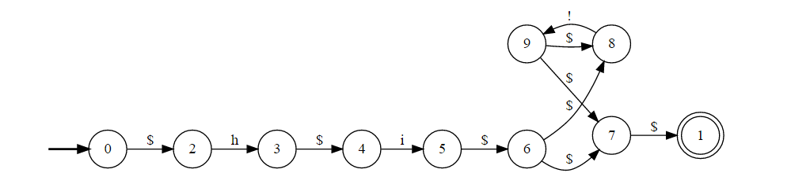

Спасибо
за внимание!
vyacheslav.goldenshteyn@gmail.com
github.com/myzone

При императивном подходе состояние программы описывается лишь состоянием памяти, используемой программой.
При автоматном подходе состояние программы классифицируется при помощи текущего состояния автомата, моделируемого программой.
| Мили | Мура | |
|---|---|---|
| Детерменированный | 1 | 2 |
| Недетерменированный | 3 | 4 |
hi!*
*Недетерменированный конечный автомат
**$ - пустая цепочка
hi!
hi
hi!!
hi!!!!!!
hi!
Требуется написать на языке Си программу, читающую из потока стандартного ввода текст, состоящий из строк, и для каждой строки печатающую первое слово этой строки и перевод строки.
int main() {
int c;
do {
c = getchar();
while (c == ' ') c = getchar();
while (c != ' ' && c != '\n' && c != EOF)
putchar(c), c = getchar();
putchar('\n');
while (c != '\n' && c != EOF) c = getchar();
} while (c != EOF);
return 0;
}
enum states_t { BEFORE, INSIDE, AFTER, END };
void step(enum state_t &state, int &c);
int main() {
enum state_t state = BEFORE;
while (state != END)
step(&state, getchar());
return 0;
}
void step(enum state_t &state, int &c) {
switch (state) {
case BEFORE: if (c == EOF) state = END;
else if (c == '\n') putchar('\n');
else if (c != ' ') putchar(c), state = INSIDE; break;
case INSIDE: if (c == EOF) state = END;
else if (c == '\n') putchar('\n'), state = BEFORE;
else if (c == ' ') state = AFTER;
else putchar(c); break;
case AFTER: if (c == EOF) state = END;
else if (c == '\n') putchar('\n'), state = BEFORE; break;
case END: break;
}
}
void step(enum state_t* state, struct model_t* model, enum sinal_t sinal) {
switch (*state) {
case INITIAL_STATE:
switch (sinal) {
case DIGIT_0:
if (!strcmp(model->display_text, "0")) {
return INITIAL_STATE;
}
case DIGIT_1:
...
case DIGIT_9:
return AFTER_DIGIT_IN_LARG;